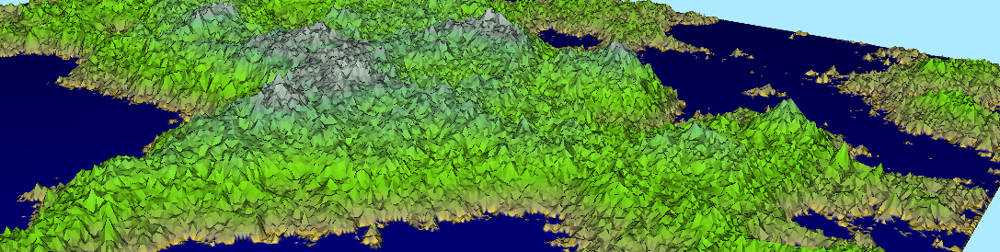

Fractal Terrain Generator
This is the documentation for my Fractal Terrain Generator project, available on github. The project is also an example implementation using the Aardvark libraries for information visualization and rendering, found on github here, as well as an example for an interactive program written in F# and a practical exploration of functional programming in general.
Contents
The Fractal Terrain Generator implements a simple tool for generating and visualizing fractal terrains based on the midpoint displacement algorithm. There are a few parameters to determine the shape of the terrain. A new one is generated per button click. The user can interact with the terrain by changing some rendering settings and playing with the colors.
The app is built using the Aardvark libraries and on Microsoft .NET. I write in F#. If you don't know any F#, there are great learning resources at fsharp.org and there are tutorials with a cool web-based interactive shell at tryfsharp.org. However, there will be a quick refresher on F# practical concepts and features used in this project in the following chapter.
Aardvark is a collection of libraries for real-time rendering and visualization developed at the VRVis Research Center since 2006. Aardvark also provides a framework for incremental adaptive computation, henceforth referred to as The Mod System. The Mod System includes tools to describe the data flow within the program in a declarative style. This is usually different from what most people would call the traditional OOP style, which is why some code might look weird at first glance.
For the 3D rendering, Aardvark's incremental rendering VM and the Aardvark.Rendering are used. Shaders are built with Fshade, composable shaders for F#, which is Aardvark.Rendering's primary shader language.
FSharp crash course
F# is a multi-paradigm language that includes functional programming concepts, and encourages a declarative programming style. It is being developed by Microsoft and the F# Software Foundation and it is most oftenly used as a CLI language that compiles into code for the Microsoft CLR. Because F# can closely interoperate with Microsoft .NET and it is possible to write code in an already established traditional imperative fashion, it is often considered a safe choice for trying out functional programming for the first time. However, F# highly encourages the functional style, and cleanly written F# code is usually very concise, readable and free of bugs.
Basics
A fresh F# program can look like this:
1:
|
|
1: 2: 3: 4: 5: 6: 7: 8: 9: 10: 11: 12: 13: 14: 15: 16: 17: 18: 19: 20: 21: 22: 23: 24: 25: 26: 27: 28: 29: 30: 31: 32: 33: 34: 35: 36: 37: 38: |
|
Let's go through this. The let statement binds a value to a name.
1: 2: 3: 4: |
|
After a value has been let-bound to a name, that binding can never be changed. This is very practical because it ensures all your variables contain exactly the values you expect them to. Mutable bindings are dangerous because variables can change over time, and should be limited in use.
The value of a binding is the last statement in its block. A block is defined by indentation - be careful about that! Therefore, a let-binding can also look like this:
1: 2: 3: 4: 5: 6: 7: 8: 9: 10: 11: 12: |
|
The program starts at a single let-binding marked with the [<EntryPoint>] attribute. By convention, it has to be a function taking a single
string[] argument and returning an integer, like this:
1: 2: 3: |
|
Functions
Functions are first-class citizens in F#. That means that functions can be let-bound to names and passed around the program exactly the same way as values can. The program Entry Point is a function. To define a function, you write a let-binding followed some parameters. Functions can look like this:
1: 2: 3: 4: 5: 6: |
|
Make sure to check the types of names by hovering over them. In the functional style, all functions have to return the same value for the same parameters.
Therefore, correctness in types guarantees correctness of the program. The types of functions usually look like 'a -> 'b -> 'c. In this notation, all
types except the last one 'a and 'b are the types of the arguments, while the last one 'c is the return type. The arrows inbetween -> separate the
types from each other. Arguments can have their type annotated using :. A function taking one function and producing something could be this:
1: 2: 3: 4: 5: 6: 7: 8: 9: 10: 11: |
|
In C#, function arguments are always tupled implicitly, that means the arguments can only exist together at the same time. Although curried functions can be written explicitly in C#, partial applications require additional programming effort. A Tuple is noted like this (F# has syntactic sugar for working with tuples):
1:
|
|
Lists and Types
Tuples are base F# types. They are very often used to quickly group some variables together. However, too large tuples can become confusing. Let's look at other ways to define types:
1: 2: 3: 4: 5: 6: 7: 8: 9: 10: 11: 12: 13: 14: 15: 16: 17: 18: 19: 20: 21: 22: 23: 24: 25: 26: 27: 28: 29: 30: 31: 32: 33: 34: 35: 36: 37: 38: 39: 40: 41: 42: 43: 44: 45: 46: 47: 48: 49: |
|
The functional style prefers records and unions, the "read-only" types. However, especially when using stuff written in C#, "regular" classes are also an important tool of the trade.
The type system of F# is very powerful and it encourages modelling problems using a complete, coherent type system and collections of mapping functions.
One important example for this are F# lists. F# lists represent immutable collections of values. Since everything is immutable, it makes little sense
to iterate over list elements with loops. Instead, lists are usually traversed using recursive functions. The F# List module contains implementations
for the common formal list operators, including List.map, List.filter and List.fold. Comprehensive descriptions of F# lists can be found in many places,
for example here. Instead, let's look at different ways to create lists:
1: 2: 3: 4: 5: 6: 7: 8: 9: 10: 11: 12: 13: 14: 15: 16: 17: 18: 19: 20: |
|
You can simply enumerate the elements between brackets, like [a;b;c], to create a list. However, that is convenient syntactic sugar by F#. In actuality,
the brackets create a special context called a computation expression. Within the list builder computation expression, the yield keyword appends
an element to the list. The yield! (read: "yield many") keyword unpacks another list and adds all elements to the current list in sequence. The final result
of the list builder is a list. A computation expression may contain any other code.
Computation expressions implement the formal concept of monads. They are a very powerful tool for modelling data flow and data relations in a clearly defined, modular and composable manner. In this case, there are two important properties. Computation expressions allow us to define contexts, within which certain keywords can have differently defined semantics, allowing us to create our own language extensions for different significances. Secondly, computation expressions isolate side-effects in a clearly stated fashion, guaranteeing that no change will affect any other parts than those it's supposed to.
You can define your own computation expressions. A description how can be found here.
Incremental evaluation - The Mod System
The Mod system is a framework for incremental evaluation and adaptive computation. It can be found in Aardvark.Base.Incremental and is the staple
for many applications within the Aardvark libraries. The incremental evaluation property means that, when using the Mod system, computations
are only conducted when necessary. When one parameter changes, only the parts affected by that parameter are re-computed. Adaptive computation
means that a result is only computed when it is actually being requested. A mod by itself won't actually do anything unless someone else "pulls" a result
out of it. Both of these are highly desirable properties, especially in applications with real-time interactivity and some form of visualization and
user interface. A robust and complete dependency tracking system and solutions to many formal hurdles are required to achieve these goals. Luckily,
the Mod system implements them and provides us with a clean declarative interface using types and computation expressions.
Let's look at some mods:
1: 2: 3: 4: 5: 6: 7: 8: 9: 10: 11: 12: 13: 14: 15: 16: 17: 18: 19: 20: 21: |
|
There exist well established patterns for formulating self-adjusting values like this. Most of them build on the concept of events and callback functions that trigger when these events occur. The callback functions affect other variables, which may have callbacks of their own, creating a chain of callbacks that keeps the program state in sync. However, since those callbacks are by definition mutating, the side effects of such mutations very quickly grow in complexity and eventually get completely out of control, landing you in callback hell.
The Mod system allows us to define our program in terms of dependencies. Values change whenever one of their dependencies change. The approach is similar to reactive programming frameworks such as Microsoft's Reactive Extensions (Rx) which is based on the observer pattern. In order to prevent complexity problems, Rx provides a rich set of combinators for composing observables without the need to write callbacks manually. Similarly to Rx combinators, the Mod system allows us to write code the functional way, isolating side effects to specific contexts! This "hides" the actual callback logic from the programmer and allows us to work with the actual mapping functions, avoiding callback hell. Crucially, and in contrast to Rx, the mod system tracks dependencies explicitly and only evaluates as much as needed in a lazy manner.
Parallel to the IMods are the asets, adaptive sets, representing set semantics:
1: 2: 3: 4: 5: 6: 7: 8: 9: 10: 11: 12: 13: 14: 15: 16: 17: 18: |
|
asets also support ASet.map, ASet.filter and ASet.fold, among others.
The Mod system is used extensively in Aardvark and has proven itself useful in many real-world applications. The Fractal Terrain Generator project shows how to bind mods to Ui controls and how to make mods into 3D rendered images.
Scene Graph and Shaders
The ISg SceneGraph system found in Aardvark.SceneGraph is one application of the Mod system for an incremental evaluation workflow. The
entire scene graph structure works with incrementality in mind, down to the actual draw calls, which are only dispatched if the scene has
actually changed (lazy rendering). The scene graph represents all values and attributes needed for rendering, organized into the established
graph structure, and translates into OpenGL draw calls.
A simple scene graph could look like this:
1: 2: 3: 4: 5: 6: 7: 8: 9: 10: 11: 12: 13: 14: 15: 16: 17: 18: 19: |
|
The ISg is written in the functional composable style using the pipe |> operator. It is built from the bottom-up, starting at an IndexedGeometry,
which is a very simple wrapper type holding geometry information (positions, normals, colors, indices, ...). Attributes are added to scene graph nodes
by creating a new specialized node that has the old node as a child. Several nodes can be consolidated into one (adaptive!) set. This is done repeatedly
until all desired attributes are defined.
All of the scene graph attributes are IMods. The ISg is kept up-to-date if any of them change. Some important scene graph attributes are:
Sg.viewTrafoandSg.projTrafosets the OpenGL view and projection trafosSg.trafoapplies any trafo to the child elementsSg.groupandSg.set(adaptively) group many nodes togetherSg.effectapplies a shader surface to child elementsSg.uniformsets the value of a shader uniformSg.passdefines the order for multi-pass renderingSg.blendModesets blending behaviorSg.cullModesets culling behaviorSg.diffuseTextureandSg.diffuseFileTextureset texturesSg.onOffenables or disables this branch of the scene graph
The ISg is compiled and displayed in a IRenderControl like:
1: 2: 3: |
|
The IRenderControl can now be set the child of any WinForms or WPF control to display the rendered result.
The shaders are built using FShade. FShade is a framework for writing composable shaders in F#. That means that shader computations can be written in several passes and combined at will, and the FShade compiler will translate the code into an actual GLSL program. FShade uses computation expressions to encapsule semantics and integrates with the Mod system. There are three computation expressions for the three shader stages:
vertexfor the vertex stagetrianglefor the geometry stagefragmentfor the fragment stage
Aardvark provides some often-used basic shaders, such as DefaultSurfaces.trafo, DefaultSurfaces.vertexColor and DefaultSurfaces.simpleLighting. An
implementation of a custom shader could look like this:
1: 2: 3: 4: 5: 6: 7: 8: 9: 10: 11: 12: |
|
An ordered list of shaders is created using the toEffect function and then added to the scene graph for compilation. After compilation,
the instructions are translated to GLSL constructs, and mods are treated as uniforms. Note that, though the program might run, shader
compilation may fail if the code violates standing GLSL rules. Feel free to check the source of Aardvark.Rendering for more great shader
examples.
Building an app
Using the previously presented techniques and libraries, I implemented the Fractal Terrain Generator app as a practical application. Because of the combination of many different programming paradigms and software constructs, I ran into some peculiarities I had to solve. I want to document my observations here as well as in the extensive comments in the source code.
An impure algorithm
The midpoint displacement algorithm used to generate the fractal terrain by itself is impure. Pure functions always return the same result every call with the same parameters. This, however, is not the case here because of the random number generator. If the user clicks the button to generate a new terrain, they expect a randomly different result despite the same parameters. The Mod system can not consistently detect a change if mutation is involved, you can not force it to re-compute by some punctual event like a button click. What I did to solve this problem was to make the button transact two changes, a dummy-change containing a garbage value and then the actual change (where the value stayed the same). This way, the Mod system detects a change and readies itself to re-compute, although the transactions happen too fast for the garbage value to be ever actually evaluated.
This was an ad-hoc solution. The correct solution would have been to include timestamps with each parameter value. This way, even though the parameters would stay the same each button click, the timestamps would be updated to the current time, forcing a re-evaluation of the algorithm. This concept of modelling reactive values as signals over time and connecting components with this constraint in mind is called Functional Reactive Programming and has already been extensively explored.
Functional Data Structures
When translating my generated terrain tree into renderable vertex positions and normals, I tried to stick with pure F# data structures at first. Since
the tree is a recursive data structure, it needs a recursive function to traverse it and collect the vertex attributes along the way. The F# way to write
this would be a recursive function that contains a list builder and calls itself in the yield! statement within the list builder. It keeps calling itself
until the end of the tree is reached and the list is empty, at which point each item is added to the list of its parent. Obviously, this creates a massive
series of list builder continuations, each of which immediately try to evaluate the continuation of its successor. At a depth of 10 iterations, this construct
became so expensive that it wouldn't fit into my computer's memory. Afterwards, I exchanged the F# lists for simple C# generic lists, passing the list
along with each recursion step and adding the elements by mutation. In the case of this many additions, this approach is much cheaper than the previous
one and 10 iterations can be handled easily.
There are many approaches to functional lists that handle various cases better. For example, I could try to model the vertex attribute collection with list concatenations and define a complete list as the sum of such. Also imaginable would be the continuation list, where the list additions are collected only as functions, which are then applied all together in a flat manner.
Using XAML
Instead of building the UI programmatically, which has its merits but can become cumbersome, I decided to try using the XAML designer in Visual Studio to create my UI and connect it with the mod system afterwards. This is far from trivial for more complex WPF controls, such as treeviews or listviews, but can be done quite efficiently for very simple cases. The F# project is the startup project for the solution. The C# project containing the XAML window is referenced by the F# project. When the main project starts, it launches the XAML project and shows the window. The window class exposes all controls relevant to the app (by name), and the app connects those controls like so:
1: 2: 3: 4: 5: 6: 7: 8: 9: |
|
The function Mod.unsafeRegisterCallbackKeepDisposable explicitly registers a callback on the value change event of a mod. There are more subtle ways
of integrating something with the Mod system.
Overall, the integration of XAML into the app creation workflow worked decently well, but I can't help but wonder if XAML is actually worth it.
Fixed Size Arrays in FShade
GLSL does not allow arrays with dynamic size. To use arrays with a fixed size (but variable content) in your shader uniforms, Aardvark.Base contains a utility
which is used like this:
1: 2: 3: 4: 5: 6: 7: 8: 9: 10: 11: 12: 13: 14: 15: 16: 17: |
|
The end.
type EntryPointAttribute =
inherit Attribute
new : unit -> EntryPointAttribute
Full name: Tutorial.EntryPointAttribute
--------------------
new : unit -> EntryPointAttribute
type Attribute =
member Equals : obj:obj -> bool
member GetHashCode : unit -> int
member IsDefaultAttribute : unit -> bool
member Match : obj:obj -> bool
member TypeId : obj
static member GetCustomAttribute : element:MemberInfo * attributeType:Type -> Attribute + 7 overloads
static member GetCustomAttributes : element:MemberInfo -> Attribute[] + 15 overloads
static member IsDefined : element:MemberInfo * attributeType:Type -> bool + 7 overloads
Full name: System.Attribute
--------------------
System.Attribute() : unit
| Apple
| Pear
Full name: Tutorial.Program.Fruit
{Ware: Fruit;
Price: int;}
Full name: Tutorial.Program.Product
val int : value:'T -> int (requires member op_Explicit)
Full name: Microsoft.FSharp.Core.Operators.int
--------------------
type int = int32
Full name: Microsoft.FSharp.Core.int
--------------------
type int<'Measure> = int
Full name: Microsoft.FSharp.Core.int<_>
Full name: Tutorial.Program.main
module List
from Microsoft.FSharp.Collections
--------------------
type List<'T> =
| ( [] )
| ( :: ) of Head: 'T * Tail: 'T list
interface IEnumerable
interface IEnumerable<'T>
member GetSlice : startIndex:int option * endIndex:int option -> 'T list
member Head : 'T
member IsEmpty : bool
member Item : index:int -> 'T with get
member Length : int
member Tail : 'T list
static member Cons : head:'T * tail:'T list -> 'T list
static member Empty : 'T list
Full name: Microsoft.FSharp.Collections.List<_>
Full name: Microsoft.FSharp.Collections.List.filter
Full name: Microsoft.FSharp.Collections.List.fold
Full name: Microsoft.FSharp.Core.ExtraTopLevelOperators.printf
from Tutorial
Full name: Tutorial.Example.x
Full name: Tutorial.Example.y
Full name: Tutorial.Example.rockstar
Full name: Tutorial.Example.main
Full name: Tutorial.Example.mult
Full name: Tutorial.Example.timesTwo
Full name: Tutorial.Example.sum
Full name: Tutorial.Example.applyFunction
Full name: Tutorial.Example.someFunction
Full name: Tutorial.Example.result
Full name: Tutorial.Example.tluser
Full name: Tutorial.Example.tuple
{Somefield: 'a;
Otherfield: string;
Evenmore: float * obj;}
Full name: Tutorial.Example.Record<_>
val string : value:'T -> string
Full name: Microsoft.FSharp.Core.Operators.string
--------------------
type string = String
Full name: Microsoft.FSharp.Core.string
val float : value:'T -> float (requires member op_Explicit)
Full name: Microsoft.FSharp.Core.Operators.float
--------------------
type float = Double
Full name: Microsoft.FSharp.Core.float
--------------------
type float<'Measure> = float
Full name: Microsoft.FSharp.Core.float<_>
Full name: Tutorial.Example.myRecord
Full name: Tutorial.Example.secondRecord
| Nothing
| Something of int
| TwoThings of int * int
Full name: Tutorial.Example.EitherOr
Full name: Tutorial.Example.tryMe
Full name: Tutorial.Example.triedYou
type Awesome =
new : name:string * value:int -> Awesome
member DoSomething : unit -> unit
member Name : string
member Value : int
member private Name : string with set
Full name: Tutorial.Example.Awesome
--------------------
new : name:string * value:int -> Awesome
Full name: Tutorial.Example.Awesome.Value
Full name: Tutorial.Example.Awesome.Name
Full name: Microsoft.FSharp.Core.ExtraTopLevelOperators.set
Full name: Tutorial.Example.Awesome.DoSomething
Full name: Microsoft.FSharp.Core.ExtraTopLevelOperators.printfn
Full name: Tutorial.Example.list1
Full name: Tutorial.Example.list2
Full name: Tutorial.Example.b
Full name: Tutorial.Example.list3
Full name: Tutorial.Example.theSame
Full name: Tutorial.Example.changing
Full name: Tutorial.Example.complex
Full name: Tutorial.Example.currentResult
Full name: Tutorial.Example.newResult
Full name: Tutorial.Example.bikes
Full name: Tutorial.Example.skates
Full name: Tutorial.Example.transport
Full name: Tutorial.Example.output1
Full name: Tutorial.Example.success
Full name: Tutorial.Example.output2
Full name: Tutorial.Example.coolISg
Full name: Tutorial.Example.compiled
Full name: Tutorial.Example.colorRed
Full name: Microsoft.FSharp.Core.bool
Full name: Tutorial.Example.modSlider
Full name: Tutorial.Example.displayLabel
Full name: Tutorial.Example.isg
Full name: Microsoft.FSharp.Core.Operators.failwith
Full name: Tutorial.Example.arr
Full name: Tutorial.Example.fixedArr
Full name: Tutorial.Example.scenegraph
Full name: Tutorial.Example.shader